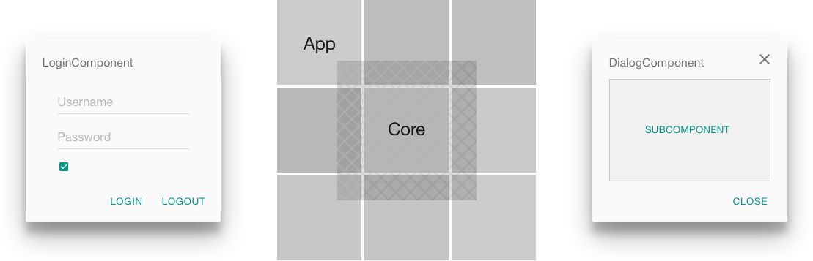

As the Web shifts from a web of content as we’ve known it to an application platform there’s been a renewed emphasis on composition in web app architecture. To manage composition in our Web UIs at Trunk Club we use a number of techniques and patterns to help scale our suite of rich-clients while avoiding duplication of common componentry. This article will discuss some of the patterns we use, describe the concept of a component library and introduce software for sharing modules between apps without use of WebPack or Browserify.
Learn how to use JS modules and a simple component library to share code in a forward-looking way.
After building Brunch With Panache and using it to stand up a number of fat-client apps we started seeing duplication in our domain models and other common application components. For example, each of our front-end apps requires use of a User model, a SecureController and a LoginView. Sharing common modules in this manner has traditionally required use of machinery like Browserify or WebPack, or, depending on the circumstances, manual duplication or a clever task-runner set-up with Grunt, Gulp or Broccoli.
To remove duplication from our front-end applications and to allow for shared components we created Brunch with Coalescence, a Brunch-based Bower component suited for storing reusable CJS, ES6 modules, and CSS for use in among apps. The primary goals are thusly:
- Limit interruption to existing Brunch app development workflows
- Avoid unnecessary architectural complexity
- Build upon current CommonJS module architecture, while planning forward for dynamic modules with ES6
Given most of our existing fat-clients use Brunch and a custom set of Jake tasks we leveraged the existing Jake CLI (part of the Brunch Toolchain) to limit interruption to the existing dev workflow — allowing common components built with Coalescence to be built in a consistent and familiar way.
To avoid introducing unnecessary architectural complexity Coalescence forgoes the use of WebPack or Browserify and, instead, taps directly into the consuming apps’ Brunch build pipelines using a symlink and a Bower component) — distributing pre-compiled source for later transpilation. The advantage of distributing precompiled and not using other tools here is less cognitive overhead, less code to manage and a streamlined, forward-looking development process.
As a result of pre-compiled distribution it’s possible to prototype changes to shared components within the apps themselves, copy those changes back to the component library and avoid working simultaneously in two repos. Additionally, existing CommonJS modules and Mocha tests are liftable, meaning they can be dropped from any Panache app straight into Coalescence and Just Work™.
We’ve included the Babel transpiler to enable creation of ES6 modules to tee up for AMD-style dynamic module loading and protocol-level bundling with SystemJS and the imminent HTTP/2 protocol. For further reading on this approach, please see the Future ES6 Loader Bundling Scenarios section of Practical Workflows for ES6 Modules.
The following figure is an abstract representation of how Coalesence (i.e. Core) fits into our front-end architecture:

In the center we have a Core surrounded by a number of App, each of which requires access to shared functionality. The Core itself is a separate entity but is consumed by each App — resulting in shared code. Bear in mind not everything is suitable for the Core. Applying Pareto’s principle, in which anything a few (20 percent) are vital and many (80 percent) are trivial, strive for Core to compose approximately one-fifth of your app.
Shown to the sides of the Core are examples of web components. The components may live inside Core, the consuming App or come from a dynamically loaded vendor library, NPM module or Bower component. Because both likely to be used in multiple apps in multiple contexts, and are good candidates for reuse in a component library.
We’re excited for the road ahead with ES6 modules and the benefits of simplicity of design, and are looking forward to continuing to innovate while we build our way through 2015.
For additional reading on Brunch with Panache please see the following previous posts and information: